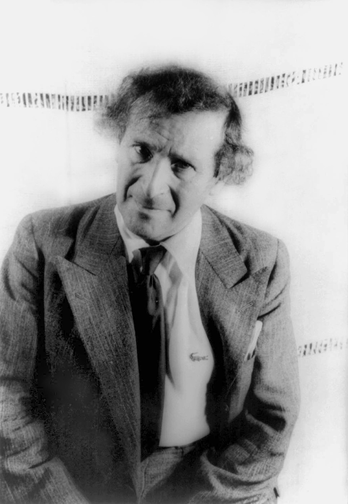

Ancient and Authentic: How Artists Have Tried to Picture the Bible’s World
There are three main ways a biblical illustration can feel truly ancient. An artist can lean on the archaeology and everyday life of the Middle East. He can find authenticity inside the figures themselves, in their faces and gestures. Or he can work in an old visual language that never aimed at realism in the first place. Below are the artists and monuments where each approach shows most clearly, along with specific works and where to see them.
Archaeology and the Living Middle East
Alexander Ivanov (1806–1858), a Russian painter who spent most of his career in Rome, devoted his last years to what are now called the Biblical Sketches. He left about two hundred watercolors, now in the Tretyakov Gallery in Moscow. He meant them as studies for murals in a building of his own imagining, a “temple of art,” and not for a church. Ivanov followed the newly published excavations at Nineveh and studied Egyptian monuments, and it shows: his scenes are laid out like friezes, his figures wear Assyrian and Egyptian dress, and they stand with an almost ritual stillness. He was trying to think in the forms of that age, which is something more than costume drama.
Abel Pann (1883–1963) came to Jerusalem in 1913 and taught at the Bezalel school, and in 1921 he brought the city’s first lithographic press from Vienna. In 1923–1924 he published Genesis: From the Creation until the Deluge, a set of 24 color lithographs. He went on to plan an illustrated Bible but never finished it. From the 1940s he worked on biblical pastels. His models were Yemenite Jews, Bedouins, and the old men of Jerusalem’s Old City, who became his patriarchs and prophets, while young Yemenite and Bedouin women, dressed in wedding finery, became Rivka (Rebekah), Rachel, and the other women of Genesis. His people are flesh-and-blood Middle Easterners, with nothing of the museum reconstruction about them.
James Tissot (1836–1902) followed the success of his Life of Christ (1886–1895) with another trip to the Middle East in 1896, this time to gather material for the Old Testament. The result was more than 350 gouaches, some of them finished by assistants after his death, and the series was published in 1904. The Old Testament pictures are now in the Jewish Museum in New York; the Life of Christ is at the Brooklyn Museum. Tissot drew an enormous amount from life: clothing, tools, landscape. The weakness is that he carried nineteenth-century Arab village life back into biblical times, so his accuracy is ethnographic and only partly historical.


Ephraim Moses Lilien (1874–1925) illustrated Die Bücher der Bibel, a multivolume German edition of the Bible (1908–1912). His Art Nouveau drawings borrow Assyrian and ancient Hebrew motifs: ornament, headdresses, winged figures. With Lilien the ancient look is mostly decorative, and the story itself takes second place.

Vasily Polenov (1844–1927), another Russian painter, traveled to the Middle East twice, in 1881–1882 and in 1899, and came back with hundreds of oil sketches. From them he painted From the Life of Christ, a cycle of 64 canvases first shown in 1909. His landscapes and his Galilean light are the real thing, painted on the spot. His figures, though, stay within the academic tradition.

Authenticity from Within
Rembrandt (1606–1669) lived on the Jodenbreestraat, next to Amsterdam’s Jewish quarter, and used his neighbors as models. There is almost no archaeology in his work: the turbans and brocades came from Amsterdam shops. His authenticity lives in faces, hands, and the silences between people. You can see it best in The Sacrifice of Isaac (1635, Hermitage), where the angel catches the hand holding the knife, and in Jacob Blessing the Sons of Joseph (1656, Kassel), where Yosef (Joseph) gently steadies his father’s hand.


Marc Chagall (1887–1985) began his Bible etchings on commission from the Paris publisher Ambroise Vollard, and in 1931 he traveled to the Land of Israel for the project. The series of 105 plates came out in 1956. His patriarchs and prophets look like the old men of Vitebsk, the town where he grew up. His sense of the ancient comes from the memory of the shtetl and its rituals, carried over onto the heroes of the Bible; it is the past of a family line, and it makes no attempt at historical reconstruction. His large late paintings on biblical themes hang in the Marc Chagall National Museum in Nice.

An Ancient Visual Language
The synagogue at Dura-Europos, on the Euphrates in today’s Syria, was painted around AD 244. Around AD 256 the townspeople buried that part of the city under earth to strengthen its walls against a siege, and the fill preserved the paintings. They were uncovered in 1932, moved to the National Museum of Damascus, and reassembled there in a reconstruction of the prayer hall; a full set of copies is at Yale. This is the earliest and largest known cycle of Jewish paintings of biblical scenes, and it makes a good yardstick for how ancient any later work really feels. Dura’s most recognizable device is a hand reaching down from heaven, showing God’s action without showing God.


Medieval Jewish Haggadahs offer another model. The Bird’s Head Haggadah (Germany, around 1300, Israel Museum) gives its human figures the heads of birds, a way of avoiding the human face. The Golden Haggadah (Catalonia, around 1320, British Library) tells the Exodus in scenes set against gold backgrounds, close in style to Gothic manuscript painting. The Sarajevo Haggadah (Barcelona, around 1350, National Museum of Bosnia and Herzegovina) opens with the Creation and shows the earth as round. These manuscripts are stylized and unrealistic, and that is exactly why they feel older than any realistic reconstruction.


For Comparison
Gustave Doré (1832–1883) published his illustrated Bible in 1866, with more than two hundred engravings. He is the most widely reproduced Bible illustrator of all, and there is almost nothing ancient about him. His Flood, his Tower of Babel, and his prophets are staged like scenes from European Romantic theater.


Where to See the Works
— Ivanov, Biblical Sketches: Tretyakov Gallery, Moscow
— Tissot, Old Testament: Jewish Museum, New York; Life of Christ: Brooklyn Museum, New York
— Rembrandt, The Sacrifice of Isaac: State Hermitage Museum, St. Petersburg; Jacob Blessing the Sons of Joseph: Gemäldegalerie Alte Meister, Kassel
— Chagall, biblical paintings: Marc Chagall National Museum, Nice
— Dura-Europos synagogue paintings: National Museum of Damascus; copies at the Yale University Art Gallery
— Bird’s Head Haggadah: Israel Museum, Jerusalem
— Golden Haggadah: British Library, London
— Sarajevo Haggadah: National Museum of Bosnia and Herzegovina, Sarajevo
 Ephraim Kalish: Books on Creativity in the Bible
Ephraim Kalish: Books on Creativity in the Bible A House Made of Words: 10 Facts About One Synagogue
A House Made of Words: 10 Facts About One Synagogue Vasily Polenov in the Holy Land
Vasily Polenov in the Holy Land